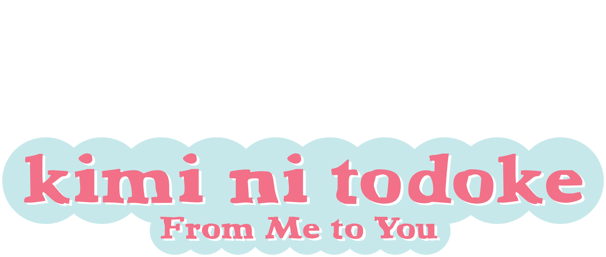

Que Chegue a Você: Kimi ni Todoke
Sawako parece meio sombria e tem dificuldade de se enturmar na escola. Mas a situação começa a mudar quando um colega extrovertido se aproxima dela.
Assista jáSawako parece meio sombria e tem dificuldade de se enturmar na escola. Mas a situação começa a mudar quando um colega extrovertido se aproxima dela.
Assista jáAssista ao Anime e ao Live Action